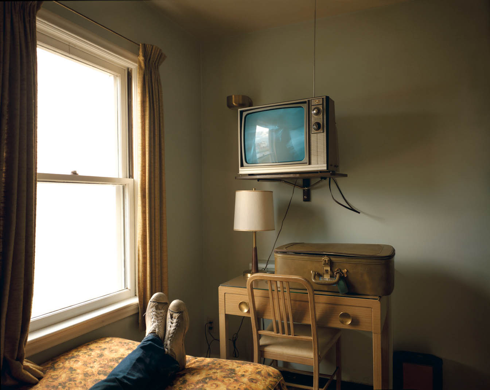

摄影大师印象（八）—— Stephen Shore
一天，saintjoe在微信上向我说起Stephen Shore，并给我传了几张他在instgram上的“养老照片”。我也迷上了他……
这次搬迁新博客，我就按时间顺序重新来说下Stephen Shore吧。 评论他仍然让我感到吃力，很多地方我也完全不懂，但，尽力吧。作为个人印象系列，我只是大胆说吧。 ### 欢迎打脸，欢迎留言。欢迎打脸，欢迎留言。欢迎打脸，欢迎留言。 ###
http://stephenshore.net/ Shore早期在安迪沃霍尔工作室做助手，拍摄了一些沃霍尔的照片，表现出非常独特的构图品味，主要人物融入人群或处在空旷巨大的环境中，明显的环境肖像，但人物在整个画面中所占比重如此之低即使在环境肖像中也是很少见的。此后Shore也有些类似构图。
Stephen Shore紧跟William Eggleston拍摄彩色照片，在当时的艺术界、纪实摄影界，彩色照片往往被认为或是轻浮的，或是难以控制的，或是非艺术非深刻的。后来这些彩色先驱们用实际行动将那些黑白权威们打趴在地。顺便一提，更早期的Saul Leiter的照片我也非常喜欢。 Shore与Lee Friedlander的新地形摄影都非常出名。在Shore的照片中，有几张与Lee Friedlander几乎是一模一样的题材。(这里还是想提下二十世纪三十年代的Walker Evans，他一些照片中表达的准确、真实、观念、手法都是超越了当时时代的，如果你的朋友说Evans的主要特点是用四平八稳，简单直接的摄影方式表现客观，那短期内就不要再和这位朋友聊起摄影了。去书店看书吧。)


Stephen Shore官网 有他的照片和采访、文章，大家可以关注下。 国内有Stephen Shore《Form and Pressure》一文的翻译——《形式与力量》， 还有一篇文章Stephen Shore的“独孤九剑”是怎样炼成的大家可以点击链接看下。 我感觉，Stephen Shore的环境肖像和”有意识的随意“，这两个方面其实可以追溯到日本浮世绘对西方美术的影响。主体占比可以大胆的小，前中后景烘托，急切而大胆的裁剪或遮掩等等带来的强大生命力。（山东博物馆正在办展——《乡愁——日本近代浮世绘名品展》，我 去看过但没拍照片，想再去趟拍拍照，聊聊浮世绘）。Stephen Shore自认为他的”框取“满足了”有意识的随意“，其实他在这方面表现其实一般，远不如20年前的William Klein，近不如同时代的Lee Friedlander，反映出他对美术和美术史认识上的不足，他所谓的”结构“”压缩“，如加油站那张图片，确实很好看、紧凑、别有风味，但在构图的灵巧、组合上感觉也不如Freedlander。这方面的批评结论，是我受微信好友李明（微信：adonisisis）对他美学批评的启发而得。
不过要注意，摄影和绘画还是有大的差别的。Stephen Shore最为强大的是建立在色彩基础上的身临其境感，将摄影师被触动时的环境直接呈现出来，不加以过多后期和改变，保持克制。我认为这是他自成一体，前无古人，甚至至今后无来者的。他在这方面开创了另一片天地，造成极大影响。就在FLICKR HCSP小组的画册讨论来看，他的《Uncommon Places》在很多人看来属于顶尖之列。
Shore有时候也会拍人特写，我觉得非常奇怪，人物似乎没有特别的动作或者出众的相貌或者特别加分的场景，但非常和谐美好。不知道为什么，哈哈，好像不只是颜色的事。
晚年Shore专注于instgram网红，拍摄了一些”简单“”平凡“的图片。
我和SaintJoe，都认为他是顶尖的色彩大师，尤其在色彩还原方面。至少在我看来，Stephen Shore是色彩和质感还原最为顶尖的摄影师，没有之一，他让一切滤镜都显得俗不可耐。 起初我以为他一直在用大画幅拍摄，然后缩为小图片。于是我在Instgram上向Shore发问 点这里，为何具有如此高超的色彩还原能力，是大画幅器材的原因还是后期处理牛B还是其他原因。Shore直接向我回复说，他在1973年——2000年用大画幅，之后就基本不用了。IG上的照片多为Iphone所拍。 尼玛，iphone拍的。。。 Shore表示感觉拍照时，注意屏幕显示的实时效果比后期管用……（喜欢屏幕，另外他喜欢大画幅的毛玻璃，IPAD的屏幕，而不是透过小小的取景器去看）。这段话我觉得对我受益很大。 再看看他IG上的照片，果然近处的照片多一些。。。。
上面同一个链接里，Stephen Shore回答另一网友发问时，表示他从不拍摄普通的照片，因为普通。 鸡蛋有什么好拍的，树叶有什么好拍的呢？摄影可以发掘它们的非凡而展现出来，从这点上来说，这部份与我们前面几篇提到的，照片与现实的差异是一样的。 鸡蛋、树叶，球等在种类上是平凡的，但我们可以用来表现他们某方面的非凡，其实绘画中的静物油画一般都是普通的食物啊，这依赖于我们的见识与眼光，颜色、纹理、质感、无意识的感受都可以成就一张好照片。使Stephen Shore《照片的本质》里所说的心理模型其实也就是见识与眼光。